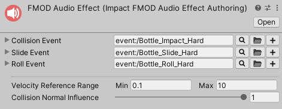
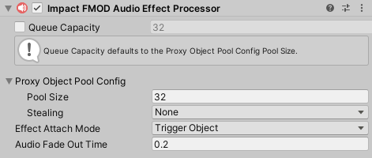

FMOD Integration
Impact CFX features an optional package for integrating with FMOD. This allows you to utilize FMOD for playing audio effects, rather than using Unity's built-in audio clips and audio sources.
Setup
First, you will need make sure you have downloaded and set up the FMOD for Unity package. You can get this package from either the FMOD site or from the Asset Store.
Next, you will need to download the Impact CFX FMOD Integration package.
Impact CFX 1.4.1+
FMOD For Unity Version: 2.02.11+
FMOD Audio Effect
The Impact CFX FMOD integration introduces a new effect asset: the FMOD Audio Effect. This is very similar to the included Audio Effect, but with fields designed for FMOD. You can create a new FMOD Audio Effect by going to .
The FMOD Audio Effect has the following properties that relate to FMOD:
- Collision Event – The FMOD event to trigger when processing single collisions. This event should consist of one-shot sounds.
- Slide Event – The FMOD event to trigger when sliding. This event should have looping sound(s).
- Roll Event – The FMOD event to trigger when rolling. This event should have looping sound(s).
FMOD Audio Effects also share the following properties with the default Audio Effect:
- Velocity Reference Range – Input velocities will be converted to a normalized (0 to 1) value based on this range and the Collision Normal Influence.
- Collision Normal Influence – How much the input normal will effect the calculated intensity of the collision. This can be used so that grazing collisions will have a low volume even if they have a high velocity.
FMOD Audio Effect Processor
Like all other effects, the FMOD Audio Effect requires a processor component, the FMOD Audio Effect Processor You can create this component by going to . Make sure that you add this processor to the Impact Effect Processors list on your Impact CFX Manager.
The FMOD Audio Effect Processor has the following properties:
- Queue Capacity – The maximum number of effects that can be processed in a frame.
- Proxy Object Pool Config – This integration uses empty game objects that manage each FMOD effect instance.
This property controls the object pool used for these empty game objects.
- Pool Size – The size of the object pool. This effectively defines how many effects can be active simultaneously.
- Stealing – The behavior for stealing when all of the objects are in use.
- Effect Attach Mode – Defines what object involved in the collision, if any, the effect should attach to.
This can be useful for long collision effects that you want to follow an object.
See Managing Attached Effects for more info on how to properly manage attached effects.
- None – Don't attach to an object.
- This Object – Attach to the object that triggered the effect, if it is present.
- Other Object – Attach to the object that was collided with, if it is present.
- Audio Fade Out Time – For sliding and rolling effects, how long the audio takes to fade out once sliding/rolling has stopped.
FMOD Parameters
Impact CFX sends parameters to FMOD to let you control your sounds:
- ImpactCFX_Intensity – A 0 to 1 value representing the intensity of the collision. This is typically the best parameter to use when controlling your sounds. This is calculated by normalizing the collision velocity relative to the Velocity Reference Range configured in Unity, and also takes into account the Collision Normal Influence.
- ImpactCFX_RawIntensity – The raw intensity of the collision, taking into account the Collision Normal Influence. There is no specified range for this value.
- ImpactCFX_CompositionValue – A 0 to 1 value representing the influence of the material at the contact point. If not using Material Composition, this will always be 1. You could use this value to scale the volume of your sounds, so that a higher composition yields a louder volume than a lower composition.
- ImpactCFX_CollisionType – An integer number that represents the type of collision:
- 0 = Collision
- 1 = Slide
- 2 = Roll
Examples
The following is an example for a collision sound effect:
{kind=link}
There were 3 steps to creating this effect:
- Create a parameter with the name ImpactCFX_Intensity and a value range of 0 to 1, and create a parameter sheet for it. For this particular effect, the Timeline sheet is empty.
- Add audio clips. In this example the audio clips are placed in the parameter sheet. This makes it so a different audio clip will play based on the collision intensity.
- Add automation to the Volume so that the volume increases as the intensity increases.
This next example shows a possible setup for a sliding or rolling effect:
{kind=link}
{kind=link}
There were 3 steps to creating this effect:
- Add an audio clip to the Timeline with a Loop region.
- Use the same ImpactCFX_Intensity parameter from earlier to create a parameter sheet.
- Add automation to the Volume and Pitch so that the volume and pitch increases as the intensity increases.
These are only example setups, and you have complete freedom to use the parameters provided by Impact CFX in any way you like.